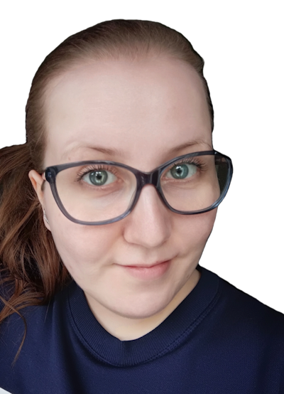

Kuka olen?
Olen 32-vuotias nainen, ja vapaa-aikani kuluu monipuolisten harrastusten parissa. Liikunta on minulle tärkeää, ja nautin kuntosaliharjoittelusta, lenkkeilystä ja pyöräilystä. Rakastan myös lukemista ja musiikin kuuntelua, jotka tuovat rentoutusta arkeen. Strategiset lautapelit sekä älypelit, jotka haastavat päättelykykyä ja ongelmanratkaisutaitoja, ovat suosikkejani. Välillä lähden luontoon rauhoittumaan ja ottamaan valokuvia, jolloin yhdistän rakkauden ulkoiluun ja taiteeseen.
